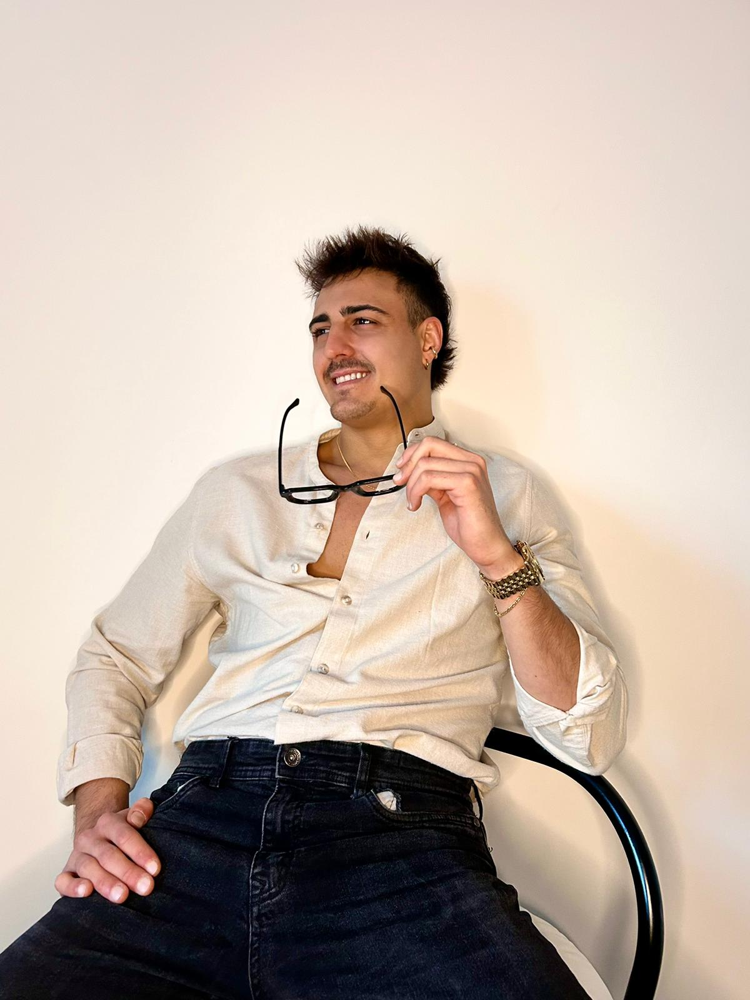
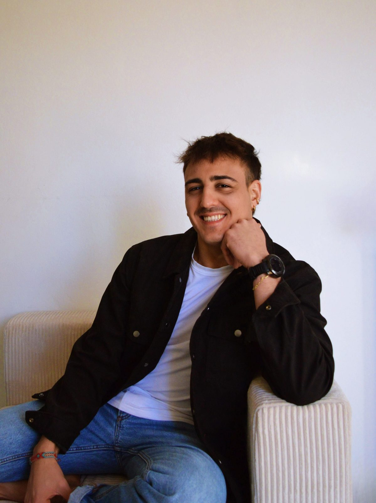
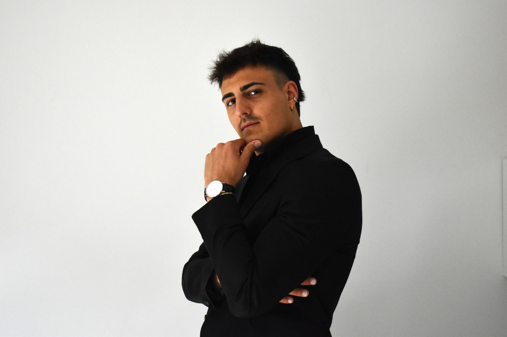

Vivere una vita sessuale PIENA
Sono Alessio Cottonaro, consulente in sessuologia ed educatore professionale. Aiuto persone e coppie a parlare di sessualità senza performance, senza vergogna, senza giri di parole.
Prima consulenza 60 €, un’ora,
online o a domicilio a Torino.
Ciao, sono Alessio.
Sono consulente in sessuologia ed educatore professionale. Lavoro con persone e coppie tra i 20 e i 50 anni, online o a domicilio. Seguo un codice deontologico, vado in supervisione e continuo a formarmi: su questi temi improvvisare fa danni.
La sessualità non è performance. È linguaggio, permesso, presenza. Spesso un blocco non è una questione di tecnica: mancano le parole. Io lavoro lì, in modo pratico. Mi interessa cosa fare, non solo cosa pensare.
Niente da dimostrare. Niente da nascondere. Niente giri di parole.
Alessio CottonaroConsulente in sessuologia · Torino
- Master di I livello in Consulenza in Sessuologia, Università di Torino
- Albo degli Educatori professionali (FNO TSRM e PSTRP) · Albo dei Consulenti in sessuologia FISS
Le frasi che non dici a nessuno.
Non serve la parola giusta. Se una di queste è anche tua, aprila.
«Non desidero più il mio partner, e non capisco perché.»
Il desiderio cambia nel tempo, e quasi mai per colpa di qualcuno. Si può capire cosa si è spento e da dove ripartire. Leggi: Difficoltà e blocchi →«Ho paura di non essere all’altezza.»
Capita a tante persone, a ogni età. Non è un difetto: è un circolo che si può interrompere. Leggi: Ansia da prestazione →«Ho perso il piacere e non so quando è successo.»
A volte il piacere si spegne piano, senza un motivo chiaro. Ripartire dal corpo aiuta a ritrovarlo. Leggi: Corpo, piacere e fantasie →«Con il mio partner abbiamo smesso di parlarne.»
Il silenzio si sedimenta e le parole diventano più difficili. Si può ricominciare da piccole frasi vere. Leggi: Come parlare di sesso con il partner →«Non mi ritrovo più, nelle relazioni o nella mia sessualità.»
Non serve avere già le risposte. Si parte da quello che senti adesso, senza etichette. Scrivimi →
Sono tutte cose normali. E si possono affrontare.